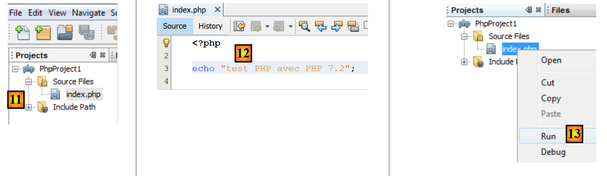
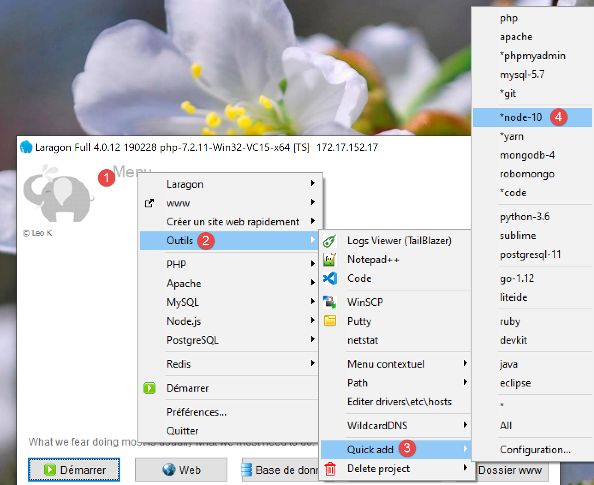
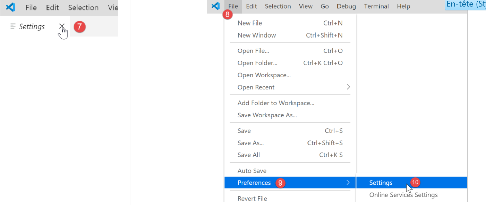
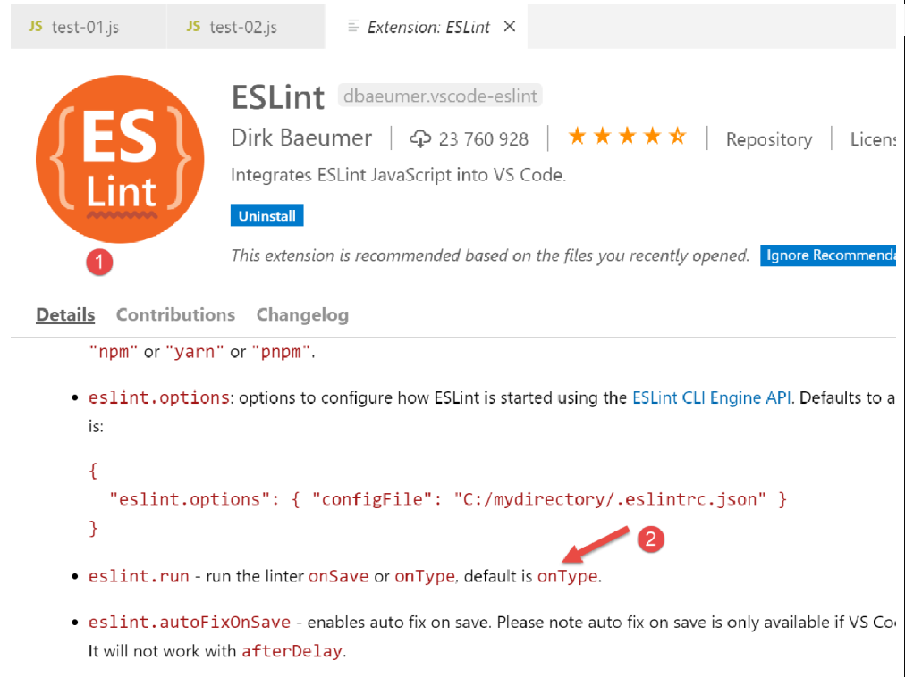

2. 搭建开发环境
我们将使用以下工具（在 Windows 10 x64 系统上）：
- [Laragon] 用于运行 PHP Web 服务器；
- [NetBeans] 用于编辑 PHP 代码；
- [Visual Studio Code] 用于编写 JavaScript 代码；
- [Node.js] 用于运行代码；
- [npm] 用于下载并安装我们所需的 JavaScript 库；
2.1. Web 服务器开发环境
PHP 脚本是在以下环境中编写和测试的：
- 名为 Laragon 的 Apache Web 服务器 / MySQL 数据库管理系统 / PHP 7.3 环境；
- NetBeans 10.0 开发集成环境；
2.1.1. 安装 Laragon
Laragon 是一个整合了多个软件组件的软件包：
- Apache Web 服务器。我们将使用它来编写 PHP Web 脚本；
- MySQL 数据库管理系统；
- PHP 脚本语言；
- 一个为 Web 应用程序提供缓存功能的 Redis 服务器：
Laragon 可于以下地址下载（2019年3月）：


- 安装完成后[1-5]，将形成以下目录结构：

- [6] 包含 PHP 安装目录；
启动 [Laragon] 后将显示以下窗口：

- [1]：Laragon 主菜单；
- [2]：[Start All] 按钮用于启动 Apache Web 服务器和 MySQL 数据库；
- [3]：[WEB] 按钮会显示网页 [http://localhost]，该页面对应 PHP 文件 [<laragon>/www/index.php]，其中 <laragon> 是 Laragon 的安装目录；
- [4]：[数据库]按钮允许您使用[phpMyAdmin]工具管理MySQL数据库。您必须事先安装此工具；
- [5]：[终端] 按钮将打开命令行终端；
- [6]：[Root] 按钮将打开一个定位于 [<laragon>/www] 文件夹的 Windows 资源管理器窗口，该文件夹是 [http://localhost] 网站的根目录。您应将所有由 Laragon 的 Apache 服务器管理的 Web 应用程序放置在此处；
现在我们来打开 Laragon 终端 [5]：

- 在 [1] 中，终端类型。在 [6] 中提供三种终端类型；
- 在 [2, 3] 中：显示当前文件夹；
- 在 [4] 中，输入命令 [echo %PATH%]，这将显示在查找可执行文件时被搜索的文件夹列表。Laragon 的所有主文件夹都包含在此可执行路径中，而如果您在 Windows 中打开命令提示符 [cmd]，则情况并非如此。在本文档中，当您需要输入命令来安装特定软件时，这些命令通常是在 Laragon 终端中输入的；
2.1.2. 安装 NetBeans 10.0 IDE
NetBeans 10.0 IDE 可从以下地址下载（2019年3月）：
https://netbeans.apache.org/download/index.HTML

下载的文件是一个 ZIP 压缩包，只需解压即可。安装并启动 NetBeans 后，您就可以创建您的第一个 PHP 项目。

- 在 [1] 中，选择“文件 / 新建项目”选项；
- 在 [2] 中，选择 [PHP] 类别；
- 在 [3] 中，选择项目类型 [PHP 应用程序]；

- 在 [4] 中，为项目命名；
- 在 [5] 中，为项目选择一个文件夹；
- 在 [6] 中，选择已下载的 PHP 版本；
- 在 [7] 中，为 PHP 文件选择 UTF-8 编码；
- 在 [8] 中，选择 [Script] 模式以在命令行模式下运行 PHP 脚本。选择 [Local WEB Server] 以在 Web 环境中运行 PHP 脚本；
- 在 [9,10] 中，指定 Laragon 软件包 PHP 解释器的安装目录：

- 选择 [完成] 以结束 PHP 项目创建向导；

- 在 [11] 中，使用脚本 [index.php] 创建项目；
- 在 [12] 中，我们编写一个最简 PHP 脚本；
- 在 [13] 中，我们运行 [index.php]；

- 在 [14] 中，显示 NetBeans [输出] 窗口中的结果；
- 在 [15] 中，创建一个新脚本；
- 在 [16] 中，显示新脚本；
读者可以在同一 PHP 项目内的不同文件夹中创建后续的所有脚本。本文档中脚本的源代码可在以下 NetBeans 目录结构中找到：

本文中的脚本位于 [scripts-console] 项目目录 [1] 中。我们还将使用 PHP 库，这些库将放置在 [<laragon-lite>/www/vendor] 文件夹 [2] 中，其中 <laragon-lite> 是 Laragon 软件的安装目录。 为了让 NetBeans 将 [2] 中的库识别为 [scripts-console] 项目的一部分，我们需要将 [vendor] 文件夹 [2] 添加到项目的 [包含路径] [3] 中。 我们将配置 NetBeans，使 [<laragon-lite>/www/vendor] [2] 文件夹被包含在每个新的 PHP 项目中，而不仅仅是 [scripts-console] 项目：

- 在 [1-2] 中，进入 NetBeans 选项；
- 在 [3-4] 中，配置 PHP 选项；
- 在 [5-7] 中，配置 PHP 的 [全局包含路径]：[7] 中列出的文件夹将自动包含在每个 PHP 项目的 [包含路径] 中；

- 在 [9] 中，访问 [包含路径] 分支的属性；
- 在 [10-11] 中，NetBeans 将扫描这些新库。NetBeans 会扫描这些库中的 PHP 代码，并存储其中的类、接口、函数等，以便为开发人员提供辅助；

- 在 [12] 中，一段代码片段使用了来自 [vendor/php-mime-mail-parser] 库的 [PhpMimeMailParser\Parser] 类；
- 在 [13] 中，NetBeans 会建议该类的各种方法；
- 在 [14-15] 中，NetBeans 显示所选方法的文档；
[包含路径]这一概念是 NetBeans 特有的。PHP 也有这一概念，但从原理上讲，它们是两个不同的概念。
既然开发环境已经搭建完毕，我们可以开始学习 PHP 的基础知识了。
2.2. JavaScript 开发环境
可通过 Laragon 安装以下工具（参见链接部分）：

在 [4] 中，安装 [node.js]。安装完成后，打开 Laragon 终端（参见链接部分），并检查已安装的 [node.js] 版本（1）以及 [npm] 的版本（2）：

接下来，我们安装 Visual Studio Code，通常简称为 [code] 或 [VSCode] [3-6]。安装完成后，我们可以启动这个开发工具：


2.2.1. 配置 Visual Studio Code
接下来我们将展示如何配置 [VSCode]，以便读者能够理解后续不时出现的屏幕截图。读者可以根据自己的喜好自由配置 [VSCode]，甚至可以设置自己偏好的工作区。这对我们接下来的操作并不重要。
首先，我们将更改 [VSCode] 窗口的外观，将其背景从黑色改为浅色：

接着，我们将隐藏左侧边栏 [1-2]，其中的项目在菜单中同样可以找到。在 [3-6] 中，我们设置了代码在每次保存文件以及每次复制粘贴时自动格式化。

保存配置 [Ctrl-S] 后，您可以关闭 [设置] 窗口 [7]。您可以随时返回 [VSCode] 配置界面 [8-10]：

这些设置保存在 [settings.json] 文件中，该文件可直接编辑。让我们如图所示打开 [设置] 窗口：

在 [4] 处，您可以直接编辑 [settings.json] 文件：

- 在 [1] 中，是 [settings.json] 文件的路径。恢复默认设置的一种方法是删除该文件；
- 在 [2] 中，是我们刚刚配置的设置；
现在，让我们在 [VSCode] [1-2] 中打开一个终端：

- 在 [3] 中，显示了打开的终端类型，此处为 PowerShell；
- 在 [4] 中，您可以输入 Windows 命令；
- 在 [6] 处，您可以打开额外的终端；
- 在 [5] 中，未关闭终端的列表；
- 在 [7] 中，关闭当前活动终端；
我们将使用 [VSCode] 终端通过 [npm]（Node 包管理器）工具安装 JavaScript 包（库）。让我们像之前在 Laragon 终端中那样，检查已安装的 [npm] 版本：

我们看到 [npm] 命令未被识别。这意味着它不在终端的 PATH 环境变量中（即用于搜索可执行文件的文件夹列表，本例中指 [npm]）。我们可以查看终端使用的 PATH：

在这些文件夹中未找到 [npm] 可执行文件。与 Laragon 安装的其他工具一样，它位于 Laragon 的 [<laragon>\bin] 文件夹中，具体在 [nodejs] 文件夹内 [4-6]。

要启动 [VSCode] 并访问 [npm]，我们将通过 Laragon 终端启动 [VSCode]。以这种方式启动时，[VSCode] 将继承 Laragon 终端的 PATH 环境变量，其中包含 [node] 和 [npm] 可执行文件所在的文件夹：

- 在 [1] 中：输入 [path] 命令；
- 在 [2] 中：显示 PATH 中的文件夹列表。我们可以看到 [node-v10] 文件夹 [2]，这确保了 [node] 和 [npm] 可执行文件能够被找到；
通过 Laragon 终端使用 [code] 命令启动 [VSCode]：

- 在 [2] 中，在 [VSCode] 中打开一个 PowerShell 终端；
- 在 [3-4] 中，可以看到 [node] 和 [npm] 可执行文件已可访问；
注意：请勿关闭启动 [VSCode] 开发环境的 Laragon 终端，否则 VSCode 本身将会关闭。
我们将进行最后一项配置：更改 [VSCode] 的默认终端：


[settings.json] 文件会立即更新：

现在，让我们打开一个新的 [VSCode] 终端 [1]：

- 在 [2] 中，是一个 [cmd] 终端（不是 PowerShell）；
- 在 [3] 中，[path] 命令会显示终端的 PATH；
- 在 [4] 中，您可以清楚地看到 [node] 和 [npm] 的可执行文件夹
2.2.2. 为 Visual Studio Code 添加扩展
让我们使用 [VSCode] 创建一个 JavaScript 文件：


- 在 [3-4] 中，我们创建一个文件夹；
- 在 [5] 中，将其设为 [VSCode] 的当前文件夹；
- 在 [6] 中，打开终端；
- 在 [7] 中，您可以看到当前已位于所选文件夹内。后续步骤将在该文件夹中进行；

- 在 [1-3] 中：创建一个新文件夹；
- 在 [4]：向该文件夹添加一个文件；

- 在 [5-7] 中：编写你的第一个 JavaScript 程序；

- 在 [8-9] 中：运行 JavaScript 程序；
- 结果显示在执行控制台 [10] 中。在 [11] 中，我们可以看到已执行的命令：[node] 应用程序执行了 [test-01.js] 脚本。之所以能成功执行，是因为该可执行文件位于 [VSCode] 的 PATH 路径中；否则，我们会收到一条错误提示，指出 [node] 命令未知；
让我们以同样的方式运行第二个脚本 [test-02.js]：

- 在 [1-3] 中，定义了新的脚本。第 1 行中的 [use strict] 语句要求进行严格的语法检查。在此上下文中，每个变量都必须使用 [let、const、var] 中的某个关键字进行声明。第 2 行中的变量 [x] 并非如此；
- 当我们使用 [Ctrl-F5] 运行此代码时，会出现错误 [5]。在执行前可以对这类错误发出警告，这更为理想。我们将进行两项操作：
- 使用 [npm] 安装名为 [eslint] 的库，用于检查脚本语法是否符合 ECMAScript 6 标准；
- 安装一个同样名为 ESLINT 的 Visual Studio Code 扩展，以便在 [VSCode] 中更便捷地使用 [eslint] 库；
首先，让我们使用 [npm] 工具安装 [eslint] JavaScript 库。要安装 [npm] 库（也称为包），您需要知道其确切名称。如果您不知道，可以访问 [npm] 网站，网址为 (2019) [https://www.npmjs.com/]：

- 在 [3] 中，以 [esl] 开头的包；
- 在 [4-6] 中，你会找到 [eslint] 包；

- 在 [7] 中，是用于安装 [eslint] 包的 [npm] 命令；
- 在 [8] 中，是包的配置；
- 在 [9] 中，介绍了如何使用它来检查 JavaScript 脚本的语法；
我们在 [VSCode] 的 [终端] 窗口中安装 [eslint] 包。首先，我们需要在 [VSCode] 工作目录的根目录下创建一个 [package.json] 文件。该文件将包含 [VSCode] 项目所使用的 JavaScript 包列表：

- 在 [1] 中，在项目资源管理器中右键单击（不要在 tests 文件夹上）；
- 在 [3-4] 中，在 [JavaScript] 项目的根目录下创建 [package.json] 文件，使其与 [tests] 文件夹处于同一层级（但不要放在 [tests] 文件夹内）；
- 在 [4-6] 处，向 [package.json] 文件中添加一个空的 JSON 对象；
然后打开 [VSCode] 终端安装 [eslint]：

- 在 [2] 中，您位于 [javascript] 项目的根目录下；
- 在 [3] 中，是安装 [eslint] 包的命令；
- 执行后，
- 在 [4-5] 中，[package.json] 文件已被修改。第 3 行显示了已安装的 [eslint] 版本。第 2 行 [devDependencies] 对应安装时使用的 [--save-dev] 选项。 该参数意味着已安装的依赖项必须作为 [devDependencies] 属性的一部分列在 [package.json] 文件中。该属性列出了开发模式下所需但生产模式下不需要的项目依赖项。实际上，[eslint] 依赖项仅在开发过程中需要，用于验证所编写的代码是否符合 ECMAScript 标准；
- 在 [6] 中，项目中出现了一个 [node_modules] 文件夹。这是项目依赖项的安装位置；

- 在 [7] 中，展示了一些已安装的包。数量相当多。实际上，不仅安装了 [eslint] 包，还安装了它所依赖的所有包；

- [1-2]，在 [VSCode] 终端中运行命令以配置 [eslint] 包。这将提出几个问题 [3] 以确定您希望如何使用 [eslint]。如果不确定，请保留默认选项。要选择一个选项，请使用键盘上的上下箭头键进行选择，然后确认；
- 在 [4] 中，项目根目录下已创建了一个 [.eslintrc.js] 文件；
- 在 [6] 中，是该文件的内容。您可以将内容复制到您自己的文件中；
module.exports = {
"env": {
"browser": true,
"es6": true
},
"extends": "eslint:recommended",
"globals": {
"Atomics": "readonly",
"SharedArrayBuffer": "readonly"
},
"parserOptions": {
"ecmaVersion": 2018,
"sourceType": "module"
},
"rules": {
}
};
仅此还不足以报告 [test-02.js] 文件中的错误：

- 你必须输入命令 [2-3] 才能对文件 [tests/test-02.js] 进行分析；
- 在 [4] 中，检测到了关于未声明变量的错误；
我们将为 [VSCode] 添加一个扩展程序，以便实时查看 JavaScript 错误。该扩展程序依赖于我们已安装的 [eslint] 包：

- 在 [3-5] 中，我们安装了名为 [ESLint] 的扩展；

- 在[1]处，显示了关于新安装扩展程序的信息页面；
- 在 [2] 中，我们可以看到 [ESLint] 的验证模式为 [type]，这意味着在输入文本时，JavaScript 脚本的语法将被实时验证；
ESLint 可通过 [VSCode] 的通用配置文件进行配置：

- 在 [6-7] 中，是 [ESLint] 的配置。您可以在这里进行修改；
现在让我们回到 [test-02.js] 文件：

- 在 [3-4] 中，与 [x] 变量相关的错误现已标记出来；
- 在 [5] 中：该文件中的 ESLint 错误数量；
- 在 [6] 中，表示 [tests] 文件夹中存在带有错误的文件；
如果我们修复了错误，ESLint 警告就会消失：

现在，让我们安装一个名为 [Code Runner] 的扩展程序：

- 安装完 [Code-Runner] 扩展程序 [1-5] 后，您可以通过 [6-7]（上方）进行配置；

- 在 [1-2] 中，是 [Code-Runner] 的配置选项；
- 在 [3] 中，我们指定每次执行前应清空输出终端；
- 在 [4] 中，找到 [Executor Map] 元素，其中列出了不同语言的执行工具；
- 在 [5-6] 中，将配置复制到剪贴板；
- 在 [7-8] 中，我们修改 [settings.json] 文件；

- 在 [2] 中，在 [settings.json] 文件 [1] 的最后一个元素后添加一个逗号；
- 在 [3] 中，粘贴之前在 [5-6] 中复制的内容：这是用于运行 [VSCode] 支持的各种语言的命令列表；
- 在 [4] 中，这是运行 JavaScript 文件的命令。此命令仅在 [node] 位于 [VSCode] 的 PATH 环境变量中时才有效。如果不在，您可以输入可执行文件的完整路径 [5]；
现在保存配置（Ctrl-S）。安装 [Code Runner] 扩展后，右键单击代码 [6]（如上图所示）即可执行 JavaScript 文件：

2.2.3. 一些有用的 [VSCode] 命令
- 要格式化代码，请右键单击代码 [1]；
- 要关闭打开的窗口，请右键单击其标题栏 [2-3]；

- 要显示特定窗口 [4-5]；
- 保存项目（工作区）[6-9]；
- 保存项目 [10-11]；


- 打开项目 [11-16]：

- 查看已安装的扩展 [19-20]：

现在我们已经拥有了优秀的 JavaScript 开发工具。接下来我们将通过简短的代码片段来介绍这门语言。由于本介绍紧随 PHP 课程之后，我们将不时对比这两种语言，以突出它们之间的差异。